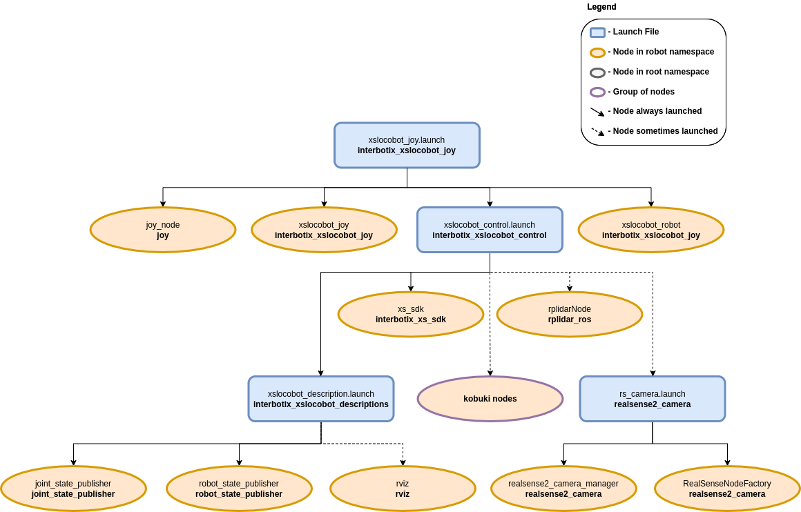

Joystick Control
 View Package on GitHub
View Package on GitHub
Overview
This package can be used to control the movements of any rover in the Interbotix X-Series LoCoBot Family using a SONY PS3 or PS4 controller via Bluetooth. In this demo, the ‘arm’ (if equipped) and ‘pan/tilt’ servos work in ‘position’ control mode, the gripper operates in ‘PWM’ mode, and the Kobuki base operates in ‘velocity’ control mode. Refer to the joystick button map below to see how to operate the robot. Specifically, some of the joystick controls manipulate individual joints while others are used to perform ‘inverse kinematics’ on all the joints to get the end-effector of the robot (defined at ‘ee_gripper_link’) to move as if it’s in Cartesian space. This is done using the modern_robotics code library offered by Northwestern University.
Structure
As shown above, the interbotix_xslocobot_joy package builds on top of the interbotix_xslocobot_control package. To get familiar with the nodes in the interbotix_xslocobot_control package, please look at its README. The other nodes are described below:
- joy - a ROS driver for a generic Linux joystick; it reads data from a
SONY PS3 or PS4 controller joystick over Bluetooth and publishes
sensor_msgs/Joy messages to the
/<robot_name>/commands/joy_rawtopic - xslocobot_joy - responsible for reading in raw sensor_msgs/Joy
messages from the
/<robot_name>/commands/joy_rawtopic and converting them into LocobotJoy messages; this makes the code more readable and allows users to remap buttons very easily later. The new messages are then published on the/<robot_name>/commands/joy_processed topic. - xslocobot_robot - responsible for reading in LocobotJoy messages
from the
/<robot_name>/commands/joy_processedtopic and publishing joint, gripper, and pan/tilt commands to the xs_sdk node; while the ‘waist’ joint is directly controlled via the PS3/PS4 joystick, other buttons allow position-ik to be performed using all the arm joints. It also publishes velocity commands to the Kobuki base.
Usage
After pairing your Bluetooth joystick controller using the Pairing Your Controller Guide, type the following in a terminal (let’s say to control the locobot_wx200 robot with no lidar):
$ roslaunch interbotix_xslocobot_joy xslocobot_joy.launch robot_model:=locobot_wx200
A red error message might appear in the screen saying Couldn't open joystick
force feedback!. This is normal and will not affect the joystick operation. To
further customize the launch file at run-time, look at the table below:
| Argument | Description | Default Value |
|---|---|---|
| robot_model | model type of the Interbotix Locobot such as ‘locobot_base’ or ‘locobot_wx250s’ | “” |
| robot_name | name of the robot (could be anything but defaults to ‘locobot’) | “locobot” |
| use_rviz | launches RViz; if you are SSH’d into the robot, DON’T set this to true | false |
| rviz_frame | fixed frame in RViz; this should be changed to map or <robot_name>/odom if mapping or using local odometry respectively |
$(arg robot_name)/odom |
| use_base | if true, the Kobuki ROS nodes are launched | true |
| use_lidar | if true, the RPLidar node is launched | false |
| show_lidar | set to true if the lidar is installed on the robot; this will load the lidar related links to the ‘robot_description’ parameter | $(arg use_lidar) |
| use_camera | if true, the RealSense D435 camera nodes are launched | false |
| threshold | value from 0 to 1 defining joystick sensitivity; a larger number means the joystick should be less sensitive | 0.75 |
| controller | type of PlayStation controller (‘ps3’ or ‘ps4’) | ps4 |
| mode_configs | the file path to the ‘mode config’ YAML file | refer to xslocobot_joy.launch |
| use_sim | if true, the Dynamixel simulator node is run; use RViz to visualize the robot’s motion; if false, the real Dynamixel driver node is run | false |
To understand how the joystick buttons map to controlling the robot, look at the diagram and table below:

Base Control Mode
| Button | Action |
|---|---|
| Left | stick Up/Down drive the Kobuki base forward/backward between 0.7 to -0.7 m/s |
| R2 | rotate the Kobuki base clockwise between 0 and -3.14 rad/s |
| L2 | rotate the Kobuki base counterclockwise between 0 and 3.14 rad/s |
| SELECT/SHARE | Reset the odometry of the base to an ‘x’, ‘y’, and ‘theta’ of 0 (the base chirps as well) |
| Right | stick Up/Down tilt the RealSense camera Up/Down |
| Right | stick Left/Right pan the RealSense camera Left/Right |
| START/OPTIONS | move the pan/tilt servo to ‘0’ radians |
Arm Control Mode
| Button | Action |
|---|---|
| START/OPTIONS | move robot arm to its Home pose |
| SELECT/SHARE | move robot arm to its Sleep pose |
| R2 | rotate the ‘waist’ joint clockwise |
| L2 | rotate the ‘waist’ joint counterclockwise |
| Triangle | increase gripper pressure in 0.125 step increments (max is 1) |
| X | decrease gripper pressure in 0.125 step increments (min is 0) |
| O | open gripper |
| Square | close gripper |
| Right | stick Up/Down increase/decrease pitch of the end-effector |
| Right | stick Left/Right increase/decrease roll of the end-effector |
| R3 | reverses the Right stick Left/Right control |
| Left | stick Up/Down move the end-effector (defined at ‘ee_gripper_link’) vertically in Cartesian space |
| Left | stick Left/Right move the end-effector (defined at ‘ee_gripper_link’) horizontally in Cartesian space |
| L3 | reverses the Left stick Left/Right control |
| R1 | if the arm has 6dof, this moves the end-effector in a negative direction along its own ‘y’ axis |
| L1 | if the arm has 6dof, this moves the end-effector in a positive direction along its own ‘y’ axis |
Both Modes
| Button | Action |
|---|---|
| D-pad Up | increase the control loop rate in 1 Hz step increments (max of 40) |
| D-pad Down | decrease the control loop rate in 1 Hz step increments (min of 10) |
| D-pad Left | ‘coarse’ control - sets the control loop rate to a user-preset ‘fast’ rate |
| D-pad Right | ‘fine’ control - sets the control loop rate to a user-preset ‘slow’ rate |
| PS | shift to the other Control Mode |